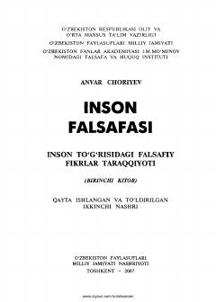

IFInson falsafasi va uning tarixiy taraqqiyotiga bag'ishlangan o'quv qo'llanma.
Mazkur o'quv qo'llanmada inson to'g'risidagi falsafiy fikrlar taraqqiyoti, uning tabiiy-ijtimoiy mohiyati va olamdagi o'rni yoritilgan. Kitobda qadimgi zamondan hozirgi kungacha bo'lgan davrda inson muammosiga bag'ishlangan ta'limotlar tahlil qilingan. Oliy o'quv yurtlari talabalari va keng kitobxonlar ommasiga mo'ljallangan.